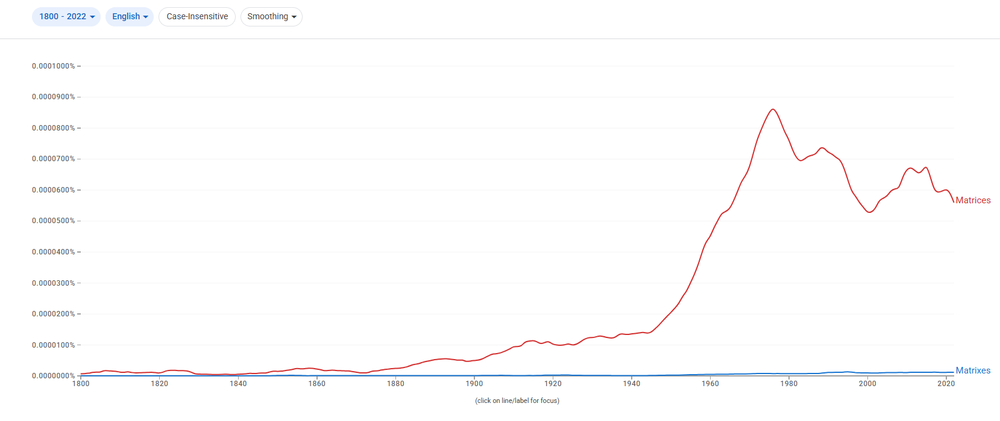
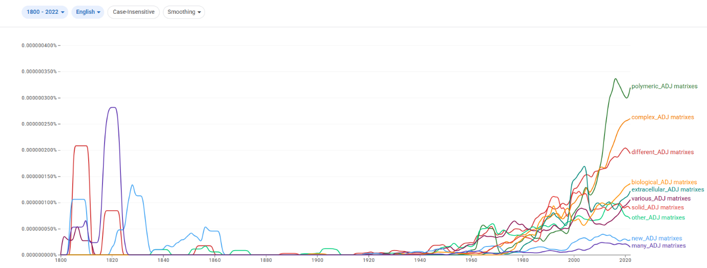
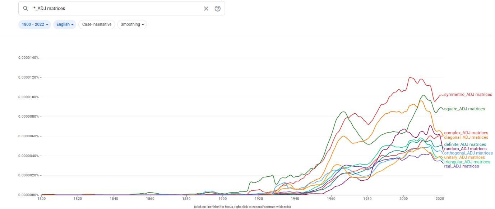
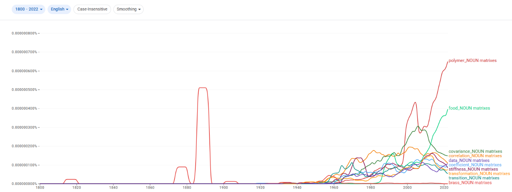
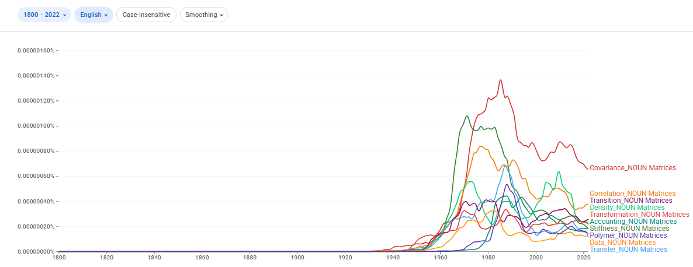
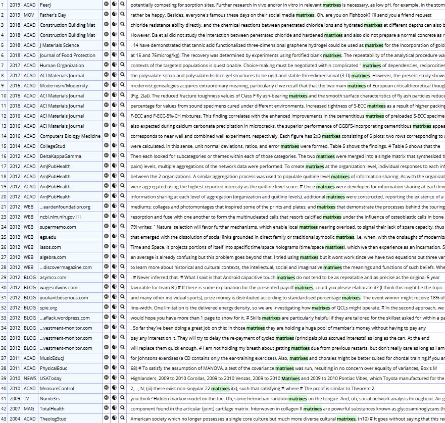
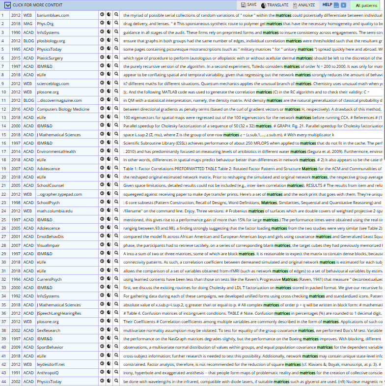

matrices/matrixes

결론
matrices와 matrixes는 ‘행렬/기질’이라는 동일 의미 영역을 공유하지만 서로 다른 레지스터에 배분된다. matrices는 수학·통계·물리·컴퓨터 과학의 학술적·전문적 표준형으로, matrixes는 일부 응용 과학(재료·생물) 및 비격식 맥락의 주변적 변이형으로 기능한다. 따라서 고전형 우세 → 장기 고전형 우세 유지 → register 분화의 구조다.
연구 결과
과정 및 결론 도달 과정 · 사용 도구
1차 Ngram 사용량 그래프로 고전형의 압도적 우위를, 2차 같은 그래프로 장기 고전형 우세 유지를 확인했다. 3차는 Ngram 연어(symmetric/square/covariance vs polymer/food/biological)와 COCA 맥락 분석(수학·통계·데이터 과학 vs 재료·토목·인문학적 비유)으로 레지스터 분화를 해석했다.
세부 정보 · 구간 별 분절
초기에는 두 형태 모두 낮지만, 19세기 후반 이후 고전형 matrices가 증가하고 20세기 중반(특히 1950년대) 이후 급증해 정점에 도달한 뒤에도 높은 수준을 유지한다. 규칙형 matrixes는 전 시기에 걸쳐 매우 낮고 제한적이다. 현재 matrices가 압도적으로 우세하다.
대등 경쟁이 아니라, 이른 시기부터 matrices가 중심을 확보한 뒤 그 우위를 지속적으로 강화하고 matrixes가 제한적으로 잔존한 장기 고전형 우세 유지의 경로다.
matrices는 symmetric/square/covariance/correlation/transition/transformation matrices 등과 결합해 선형대수·통계·물리·계산과학의 핵심 기술어로 쓰이고, matrixes는 polymeric/extracellular/biological, polymer/food matrixes 등과 결합해 재료·생명과학의 물리적 ‘기질’을 지칭하는 응용 맥락에 가깝다. COCA에서도 matrices는 수학·통계 연산·데이터 과학·심리 검사(Raven's Progressive Matrices)에, matrixes는 재료·토목 공학·인문학적 비유·일부 데이터 맥락에 분포한다. 같은 의미 영역에서 고전형=학술 표준, 규칙형=응용·비격식으로 갈리는 register 분화다.
고전형 matrices는 matrix가 수학 전문 용어로 자리 잡는 과정에서 라틴어 복수형으로 규범화되었고, 이후 수학·통계·컴퓨터 과학의 학술 표준 용어로 고착되며 형태가 유지되었다. 규칙형 matrixes는 일부 응용적 맥락에만 주변적으로 남았다.
참조 이미지
연어 그래프 · COCA 맥락 캡처 펼치기





